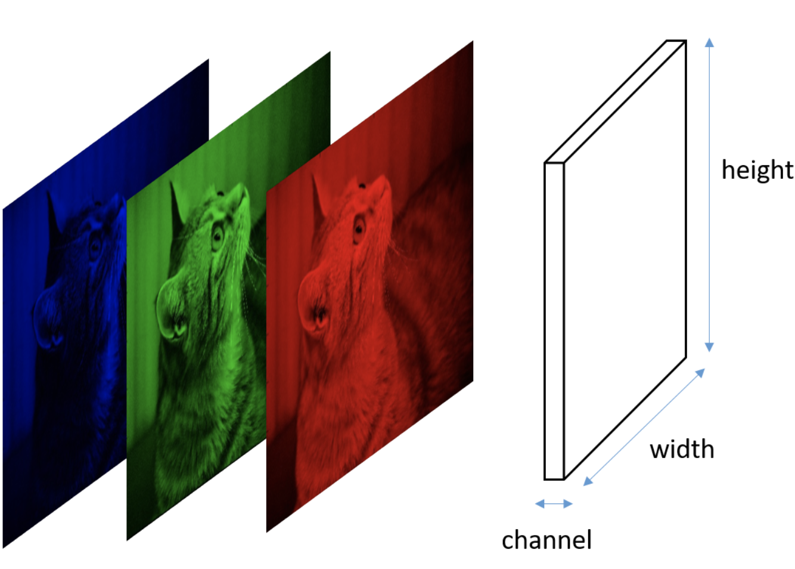
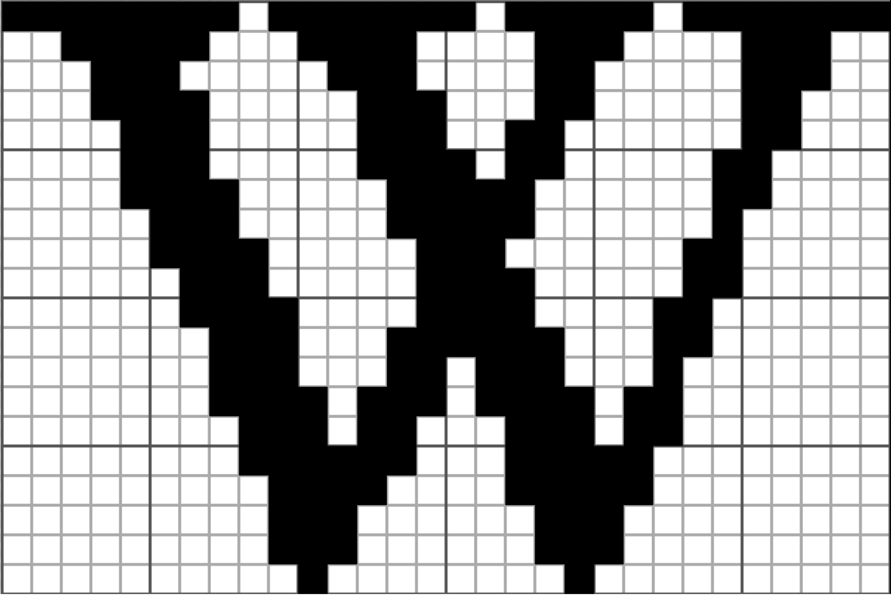
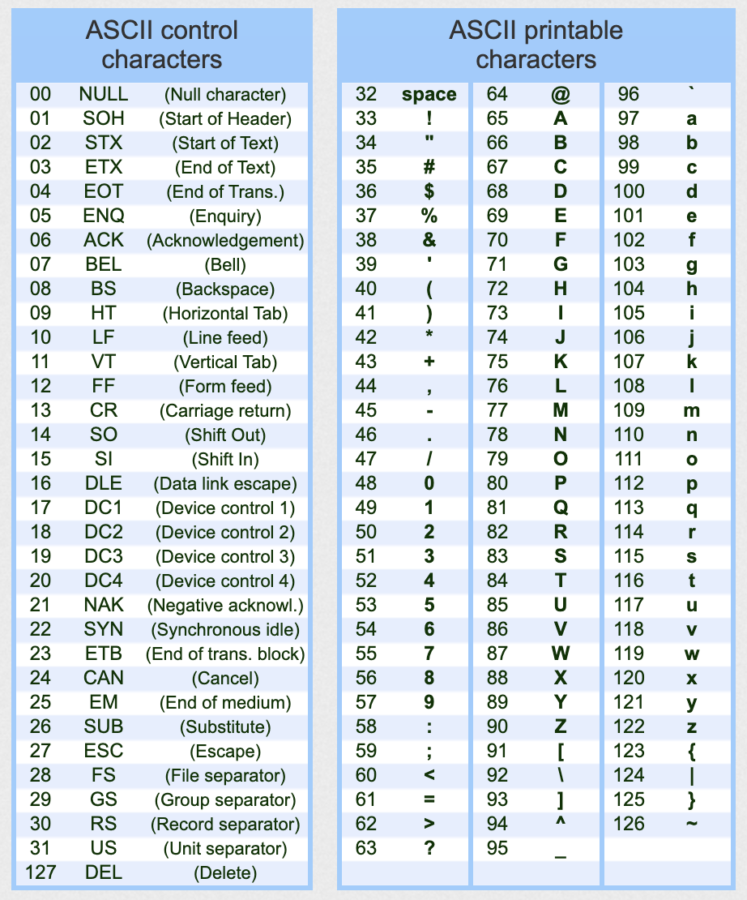

CSC 103
How Computers Work
Smith Computer Science
How Computers Work
Smith Computer Science
We say that binary is a positional number system with a base of 2:
\[
\begin{alignat}{2}
0b11011000001 &=& \: 1*2^{10} \: & + & \: 1*2^9 \: &+& \: 0*2^8 &+& \: 1*2^7 \: &+& \: 1*2^6 \: &+& \: 0*2^5 \: &+& \: 0*2^4 \: &+& \: 0*2^3 \: &+& \: 0*2^2 &+& \: 0*2^1 \: &+& \: 1*2^0 \: & &\qquad\\
\qquad &=& \: 1024 \: & + & \: 512 \: &+& \: 0 &+& \: 128 \: &+& \: 64 \: &+& \: 0 \: &+& \: 0 \: &+& \: 0 \: &+& \: 0 &+& \: 0 \: &+& \: 1 \: &=& \: 1729
\end{alignat}
\]
We can do all sorts of arithmetic ( \( +,-,*,\backslash \) ) and logical operations ( \( NOT, OR, AND\) ).
Two additional logical operations to check are: XOR and NAND.
| p | q | p NOR q |
|---|---|---|
| 0 | 0 | 1 |
| 0 | 1 | 0 |
| 1 | 0 | 0 |
| 1 | 1 | 0 |
| p | q | p XOR q |
|---|---|---|
| 0 | 0 | 0 |
| 0 | 1 | 1 |
| 1 | 0 | 1 |
| 1 | 1 | 0 |

| p | q | p NAND q |
|---|---|---|
| 0 | 0 | 1 |
| 0 | 1 | 1 |
| 1 | 0 | 1 |
| 1 | 1 | 0 |
Activity 1 :[2 minutes] : How would you store an image in a computer?

Activity 2 :[2 minutes] : How would you store a letter in a computer?
Is this a good idea?

So, how would you do it?

(from https://theasciicode.com.ar/)
Note: It's ONLY when we need to print them to a screen (or paper) that the numbers must be converted to shapes.
in the meantime, the computer just needs to know Oh!, this number is to be treated as a letter!.
Activity 3 :[2 minutes] : How would you store video?
Multiple images would do the trick.
Note that, for better compression, you could simply store the "changes between frames".
Activity 4 :[2 minutes] : How would you store sound?
You could store notes!
In physics-terms, that means we just need to store the frequencies and their duration.
Excellent example here
The term "Boolean" comes from a mathematician called George Boole.
Several additional rules and derived principles have been developed based on the basic rules seen above; these are called Boolean algebra.
This is important to us because they give us the theoretical basis to perform a large amount of operations with Truth values of the form 0/1, which can be translated to electric circuits.
This is how we go from "conceptual" computation to "actual" computation.
A transistor is an electronics component that lets electricity pass through from one of its input pins (collector) to one of its output pins (emitter) if there is an input on the third signal pin (base).

The brilliance here is that this allows an electric signal (that can be programmed) to control another electric signal; making the electric component capable of self-guidance.
To explain how we do this, we'll use an analogy with water and pipes, which contains:
A logic gate is a digital circuit that behaves like its boolean operator counterpart.
The Boolean Operations and the Logic gates are shown in the tables below: